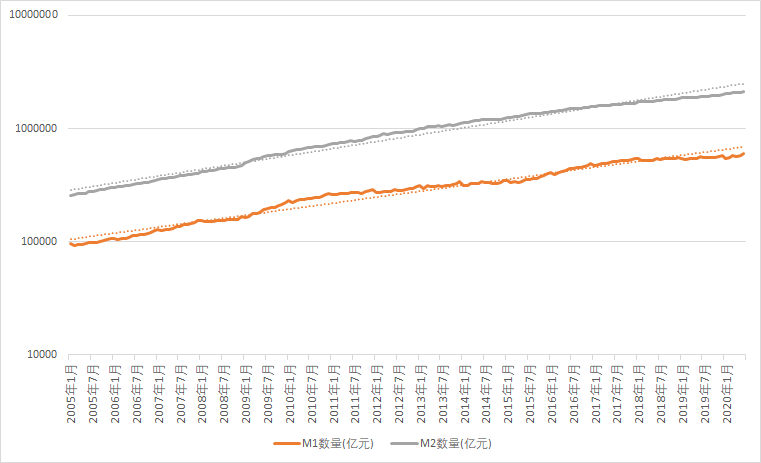
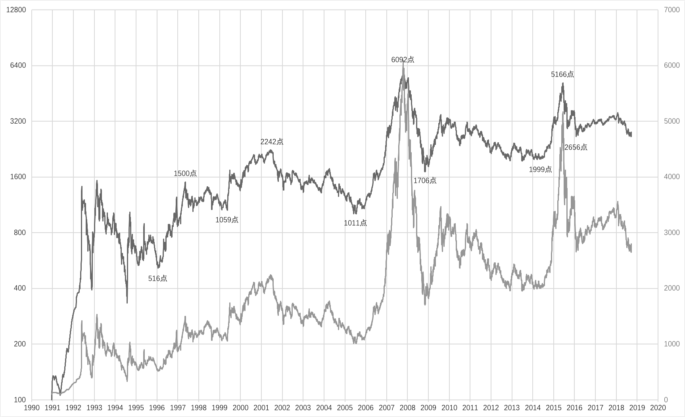
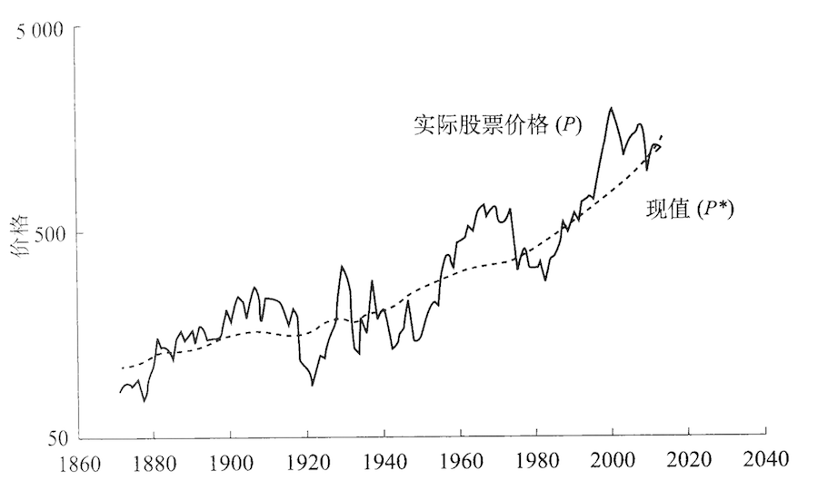

People learn from history that people never learn from history.
—— Georg Wilhelm Friedrich Hegel
The logarithmic scale chart of M1 and M2 of RMB since 2005/1, the data can be downloaded from here.
The logarithmic scale chart of SSE Composite Index from 1990/12/19 to 2018/09/21, the data can be downloaded from here.
The chart of Standard & Poors Stock Price Indexes, which I copied from the book Irrational Exuberance written by Robert Shiller.
